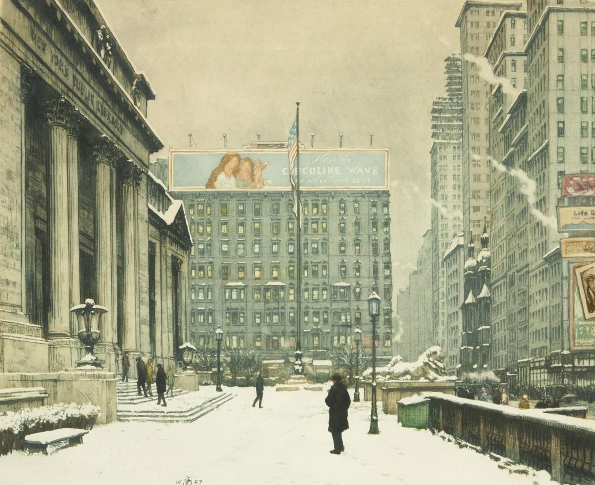

+ date = '2021-01-22T09:31:34+08:00' description = '记录 New York
Public Library' keywords = ['艺术'] tags = ['艺术'] title = 'New York
Public Library' +

Figure 1: New York Public Library
Time for something more urban! Tavík František Šimon was an influential Czech printmaker and painter. Largely ignored during the Communist era in Czechoslovakia, his work has received greater attention in recent years.
He studied art at the Academy of Prague. After his studies were completed, Simon resided in both Paris and Prague. Many of his most notable images are of Prague, New York, and Paris, but also include portraiture, self-portraiture, and images of the Czech and Slovak countryside. Šimon's style was strongly influenced by the French Impressionists and, perhaps through them,by Japanese printmaking techniques, in particular color aquatints with soft ground etching. Šimon was also a master of the mezzotint but completed very few prints in this difficult medium, most of them being female nudes in subtle tones of black.
He was 49 years old when he undertook the journey of his lifetime, sailing literally around the world departing Cherbourg in September 1926 and travelling through the USA, crossing the newly built Panama Canal to sail the Pacific to the Far East and then back home to Europe via Ceylon and the middle East. Arriving in New York, he wrote, "The ship's orchestra was playing as we slowly approached the port of New York City in the morning.In the distance we could see the outlines of skyscrapers drowning in a silver haze then, as we came closer, rising and standing, etched against the shimmering background of the rising sun. A shiver went up and down my spine as we entered the huge harbor whose backdrop of slim buildings was interspersed with the rising smoke from factories."